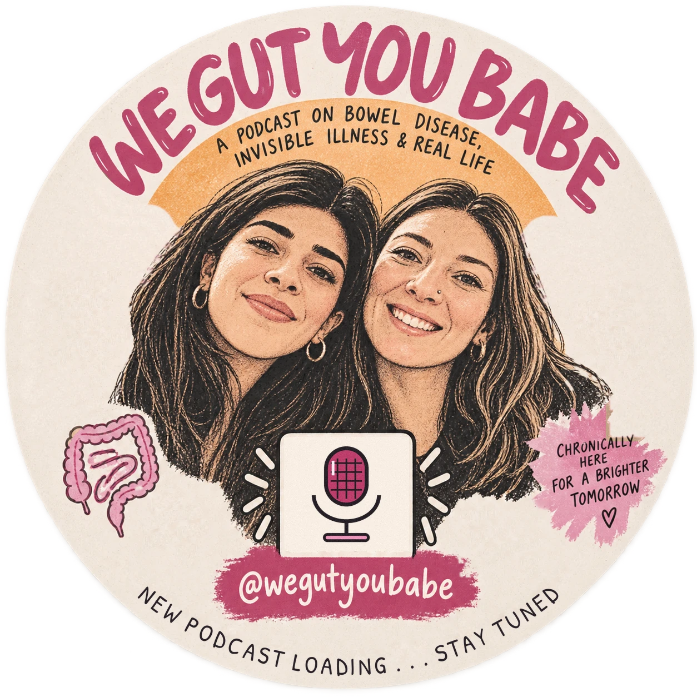

1
You live with it
Crohn's, colitis, a stoma, something so rare it has no support group. Real talk about the daily stuff: work, travel, food, energy, the bad weeks.
A podcast on bowel disease, invisible illness & real life
Two friends. Two chronic bowel diseases. One podcast about living with an illness nobody can see, and everything that comes with it.
For anyone who wants to understand life with a chronic illness. No experience needed.

Crohn's, colitis, a stoma, something so rare it has no support group. Real talk about the daily stuff: work, travel, food, energy, the bad weeks.
Partner, friend, parent, colleague. What to say, what not to say, and what "I'm fine" actually means.
Millions of people carry a chronic illness you'd never spot. Come find out what it's really like, from people who can still laugh about it.
Bowel disease affects people of every gender. So does this podcast.
Lives with desmosis coli, a genetic gut disorder so rare it has a handful of documented cases worldwide, plus PMOS (the condition formerly known as PCOS) and a few things she still hasn't got a diagnosis for. Has lived in five countries, now lives and works in Switzerland, and is happiest in a room full of people, collecting their stories.
Known for: getting anyone talking within five minutes.
Lives with Crohn's disease and has turned years of appointments, flare-ups and second opinions into hard-won expertise. From Berlin, speaks Turkish, German and English, and is never short of a story or a strong opinion.
Known for: being warm, generous and the friend you can always count on.
Two economics-and-finance grads turning invisible illness into a conversation worth having.
Every episode follows the same shape: what it's actually like, how someone got through it, and what nobody tells you in advance. Honest, unfiltered, and never medical advice.
Our own stories first. How we got diagnosed, what changed, what didn't, and how we ended up friends with matching problems.
People living with other chronic illnesses — close to ours or nothing like them. Different bodies, remarkably familiar feelings.
Once we've built an audience, we take your questions to gastroenterologists in Zurich, Berlin and Istanbul — three countries, three health systems, the same conditions. You ask, they answer.
The thread running through all of it: none of this shows from the outside, and that changes how the world treats you.
Chronic bowel disease doesn't show. Which is nice for passing as normal, and exhausting for everything else.
That gap is what we talk about.
Point your camera at the code and it takes you straight to us. Screenshot it, stick it on a noticeboard, send it to someone who needs it.
@wegutyoubabeOne email when we launch, then only when there's something worth your inbox. No spam, we have enough going on.
Any condition, any country, any gender. If you'd be up for a conversation, email wegutyoubabe@gmail.com or send us a DM. We'd love to have you on.